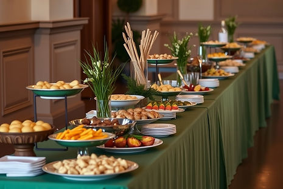
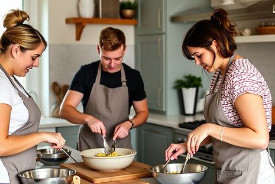
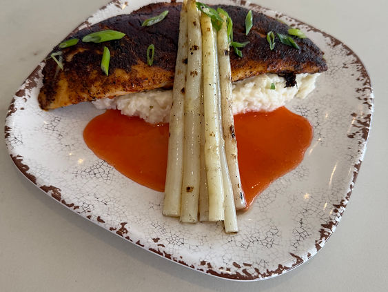
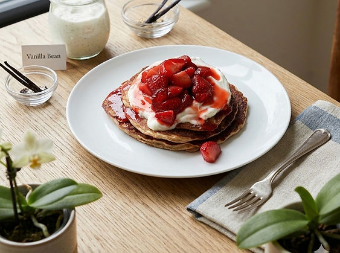
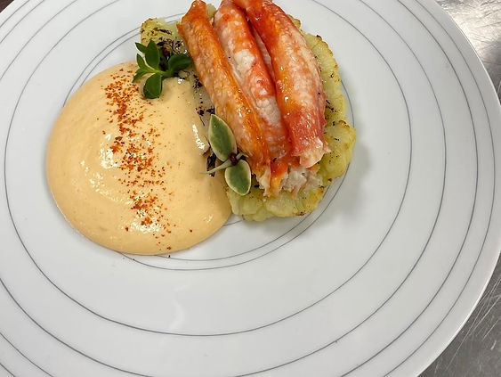

Private Chef
In-home culinary direction, custom menus, plating, service flow, and clean handoff.
Private Chef & Catering in Florida
Elegant, practical food experiences built for your home, event, and calendar. You choose the menu, dining pace, and style; I handle the execution.
Services
From intimate dinners to full-service events, everything is designed around your guests, your kitchen, and realistic timelines.
In-home culinary direction, custom menus, plating, service flow, and clean handoff.

Corporate events, weddings, tastings, and private celebrations with practical execution and polished delivery.

Weekly plans built from balanced proteins, produce-forward sides, and straightforward prep methods.
Small-group practical classes focused on technique, menu execution, and hands-on confidence.
Menu audits, training support, and menu-costing guidance for small operators and opening teams.
About
Culinary Revolutionary combines decades of hands-on execution with a calm guest-first process. The portfolio includes experience at The French Laundry, Bensi, Mexican Radio, Amore Italiano, and Big Sky. I completed formal training through Johnson & Wales and have logged 30+ years in active culinary production, plus 30+ cooking competitions and two James Beard nominations.



Inquiry
Submit your details and preferred event type to check availability.